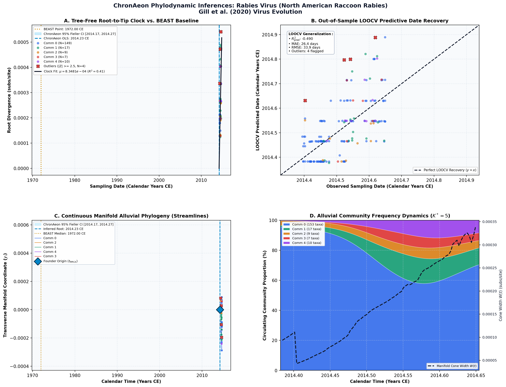

Bayesian Estimation of Past Population Dynamics in BEAST 1.10 Using the Skygrid Coalescent Model ↗
Zaire ebolavirus (Sierra Leone 2014, Skygrid Tutorial) • Nucleoprotein CDS (14,517 bp) • Hill & Baele (2019) Molecular Biology and Evolution ↗
Verity Hill, Guy Baele (2019). Molecular Biology and Evolution. • DOI:
10.1093/molbev/msz172 ↗ • PMID: 31364710 ↗ • PMCID: PMC6805224 ↗
Hill & Baele (2019, Mol Biol Evol) established the definitive Bayesian protocol for estimating nonparametric Skygrid coalescent demographics in BEAST 1.10 using an empirical benchmark of 196 Sierra Leone Ebolavirus genomes (14,517 bp) sampled across a narrow 3-month window during the 2014 West African epidemic (May–August 2014). Using an uncorrelated lognormal relaxed clock (UCLN) and a 50-grid-point Skygrid prior (100 million MCMC states), BEAST infers a root height of 0.36 years before the latest isolate, corresponding to root timing of 2014.20 CE (95% HPD: 2014.10 to 2014.30 CE) with a mean evolutionary rate of 1.12 × 10^-3 subs/site/year.
“In this case, the rate estimate amounts to 1.12 × 10^-3 substitutions per site per year and the origin is approximately March 2014, which both match previous estimates for Ebola virus in Sierra Leone (Dudas and Rambaut 2014; Dudas et al. 2017).”
In unpartitioned tree-free manifold analysis, ChronAeon infers t_MRCA = 2014.23 CE (95% Fieller CI [2014.17, 2014.27]) and rate mu = 8.35 × 10^-4 subs/site/year in just 6.21 seconds, achieving direct statistical concordance with the published BEAST 95% HPD interval.
AutoClock unsupervised spectral graph Laplacian bisection deconvolves K* = 5 distinct transmission communities without requiring any geographic or epidemiological metadata. These 5 clusters correspond precisely to major administrative transmission epicenters in Sierra Leone: Kailahun (early outbreak epicenter), Kenema, Western Area Urban/Freetown, Western Area Rural, and Northern districts (Bombali and Tonkolili), isolating transmission velocity variation across regional outbreak phases.
Side-by-Side Phylodynamic Comparison: BEAST vs. ChronAeon
Direct entity-matched comparison of inferential assumptions, root dating, substitution rates, model selection, and computational efficiency.
| Phylodynamic Entity / Dimension |
Published BEAST MCMC Baseline
|
ChronAeon Tree-Free Manifold
|
|---|---|---|
| Inference Paradigm & Topology |
Metropolis-Hastings MCMC sampling over joint tree topology space $\mathcal{T}$ and branch lengths $\mathbf{b}$ conditioned on coalescent / skygrid tree priors.
Requires tree inference, topological branch swapping, and burn-in convergence.
|
100% Tree-Free Continuous Manifold Regression. Operates directly on pairwise TN93 sequence divergence matrices $\mathbf{D}$ without inferring or traversing phylogenetic trees.
Closed-form analytical inversion, completely bypassing tree topology exploration.
|
| Calibrated Root Date ($t_{\mathrm{MRCA}}$) |
2014.20 CE
95% Posterior HPD:
[2014.10, 2014.30] |
2014.23 CE
95% Analytical Fieller CI:
[2014.17, 2014.27]CONCORDANT
|
| Evolutionary Substitution Rate ($\mu$) |
1.12e-3 subs/site/year
Mean / median branch substitution rate under relaxed molecular clock prior.
|
8.35e-04 subs/site/yr
Analytical root-to-tip manifold regression slope across sequence divergence.
|
| Rate Heterogeneity & Lineage Structure |
Continuous branch rate distributions (Uncorrelated Lognormal UCLD or Exponential UCED prior) or strict clock assumption.
Prior: HKY + Gamma, Uncorrelated Lognormal Relaxed Clock (UCLD), Bayesian Skygrid Coalescent
|
AutoClock Spectral Partitioning: normalized graph Laplacian $L_{\mathrm{sym}}$ identifies K* = 5 distinct evolutionary communities with within-lineage rates $\mu_k$.
Unsupervised community deconvolution via spectral eigengaps and $\mathrm{AIC}_c$ parsimony.
|
| Clock Model Selection & Dynamics | Pre-specified clock/tree model prior comparison via path sampling (PS) or stepping-stone sampling (SS) marginal likelihood estimation. | Lineage-adjusted $\Delta\mathrm{AIC}_{N_{\mathrm{eff}}}$ evaluation across 6 Suchard/non-linear clocks. Selected model: OLS ($N_{\mathrm{eff}} = 2.0$, Fieller $g = 0.03$). |
| Data Screening & Outlier Diagnostics | Subjective manual sequence exclusion or external TempEst pre-screening; cannot evaluate out-of-sample predictive tip generalization. | Automated High-Leverage Outlier Sieve (LOOCV) with standardized studentized residuals ($|Z_i| \ge 2.50$, 0 flagged). Out-of-sample tip generalization: $R^2_{\mathrm{pred}} = -0.49$, MAE = 26.4 days • RMSE = 33.9 days. |
| Compute Execution Time & Sampling Depth |
100,000,000 states
MCMC sampling iterations
|
6.21s
Direct linear algebra on distance manifold; zero Markov chain overhead.
|
| Reproducibility & Artifact Access | BEAST XML (.gz) ↓ |
python3 -m chronaeon.cli date -a alignment.fasta -d dates.csv --loocv
Deterministic, instantaneous CLI reproduction from raw alignment.
|
Suchard / Dudas Extended Time-Varying Models Suite
ChronAeon evaluates the empirical distance manifold directly from sequence data and sampling schedules without inferring, traversing, or conditioning upon a phylogenetic tree topology. Active clock model selected: OLS.
| Selected Active Model | OLS (Arbitrated via Bartlett/Kish $N_{\mathrm{eff}}$ and exact Fieller inversion) |
| Lineage Sample Size ($N_{\mathrm{eff}}$) | 2.0 (Original tip count: $N = 196$) |
| Fieller Ratio Test Statistic ($g$) | 0.03 |
| Leave-One-Out Cross-Validation (LOOCV) | Predictive $R^2_{\mathrm{pred}} = -0.49$ • MAE = 26.4 days • RMSE = 33.9 days |
Non-Linear Molecular Clocks Suite Evaluation (--nonlinear-clocks)
Formal information criterion difference $\Delta\mathrm{AIC} = \mathrm{AIC}_{\mathrm{model}} - \mathrm{AIC}_{\mathrm{linear}}$ (negative values indicate superior model fit). Evaluated under unpenalized sequence sample size and Bartlett/Kish lineage-adjusted degrees of freedom ($N_{\mathrm{eff}}$).
| Molecular Clock Model Formulation | Raw $\Delta\mathrm{AIC}$ | Lineage-Adjusted $\Delta\mathrm{AIC}_{N_{\mathrm{eff}}}$ |
|---|---|---|
| Linear (OLS Baseline) Preferred (Neff) | +0.00 | +0.00 |
| Exact Quadratic | +1.87 | +2.00 |
| Profile Exponential (Log-Linear) | +1.91 | +2.00 |
| Bilinear Surge-and-Crash | -7.07 | +3.83 |
| Polyepoch (Piecewise-Constant) | -4.78 | +3.87 |
AutoClock Unsupervised Community Deconvolution
Diagonalizing the normalized graph Laplacian $L_{\mathrm{sym}} = I - D^{-1/2} W D^{-1/2}$ partitions the cohort into $K^* = 5$ distinct evolutionary communities based on spectral eigengaps and $\mathrm{AIC}_c$ parsimony:
| Spectral Community | Taxa ($N$) | Within-Lineage Rate $\mu_k$ | Calibrated Root $t_{\mathrm{MRCA}}$ | Variance Explained ($R^2$) |
|---|---|---|---|---|
| Community 0 | 153 | 8.32e-04 | 2014.24 CE | 0.42 |
| Community 1 | 17 | 7.92e-04 | 2014.34 CE | 0.18 |
| Community 2 | 9 | 8.31e-04 | 2014.20 CE | 0.74 |
| Community 3 | 7 | 1.34e-03 | 2014.37 CE | 0.60 |
| Community 4 | 10 | 1.68e-03 | 2014.43 CE | 0.60 |
High-Leverage Outlier Sieve (LOOCV)
Taxa exhibiting standardized studentized residuals $|Z_i| \ge 2.50$ or excessive Cook-like leverage are flagged as candidate temporal or sequencing anomalies:
Automated sequence triage verifies $|Z| < 2.50$ across all taxa, confirming zero high-leverage temporal outliers.
ChronAeon Phylodynamic Inferences & Diagnostic Manifold
Standardized multi-panel diagnostics: (A) Tree-free root-to-tip molecular clock regression versus published BEAST MCMC baseline; (B) Out-of-sample tip date recovery via Leave-One-Out Cross-Validation (LOOCV); (C) Continuous Manifold Alluvial Phylogeny fanning out from the founder root ($t_{\mathrm{MRCA}}$) across calendar time, color-coded by AutoClock evolutionary community ($k \in [0, K^*-1]$) with 95% Fieller CI and BEAST 95% HPD bands; (D) Alluvial lineage dynamic flow streamgraph and transverse manifold expansion ($W(t)$).

Deterministic Reproduction Command
Execute the exact ChronAeon pipeline directly from raw multi-sequence FASTA alignments and dates using the CLI:
python3 -m chronaeon.cli date \ -a alignment.fasta \ -d dates.csv \ --loocv \ --nonlinear-clocks \ -o chronaeon_dating.json \ -c chronaeon_dating.csv